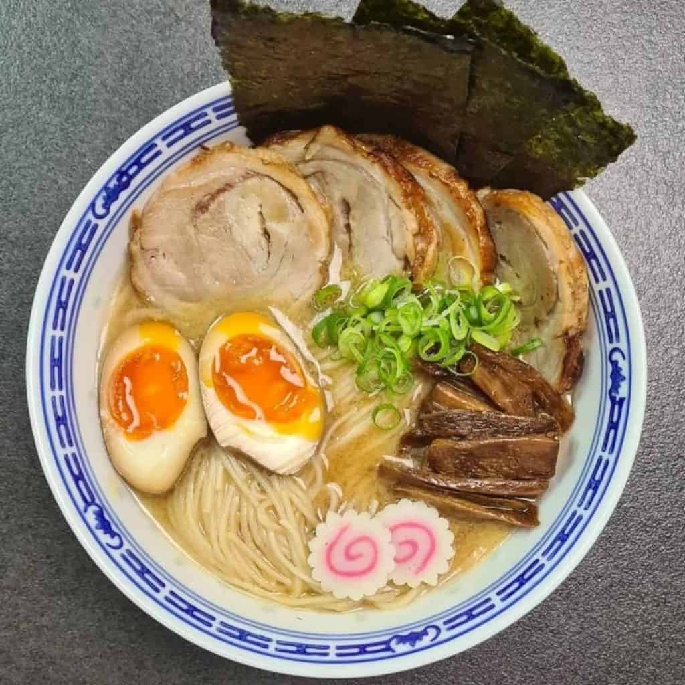

The Classic Packaged Ramen, Reimagined

Fresh vegetables? Quick and easy homemade broth?
A soft-boiled egg and a pile of our favorite curly-cue packaged ramen noodles that remind us of college?
That`s this homemade ramen.
What we need to have:
- Ramen noodles (our classic Maruchan package is all we need, sans the seasoning!)
- Garlic and ginger
- Broth (chicken or veg)
- Dried shiitake mushrooms
- Veggies like carrots or kale
- All your favorite toppings like some panko, egg, chili oil, etc.
How to cook:
- Stir-Fry Aromatics: Garlic and ginger, what a delicious duo. This is where the flavor is, friends.
- Make Your (Easy!) Broth: Add some chicken broth and dried shiitake mushrooms for some umami punch.
- Add Noodles: Cook your noodles right in the broth with some scallions (more flavor, please!).
- Add Veg:Thinly sliced kale, shredded carrots, whatever you’d like! Cook until just tender.
- Top It Off: Add some crunchy panko crumbs, a soft-boiled egg, chili oil, hot sauce, sesame oil,
and/or soy sauce, whatever your heart desires.
Back to the main page